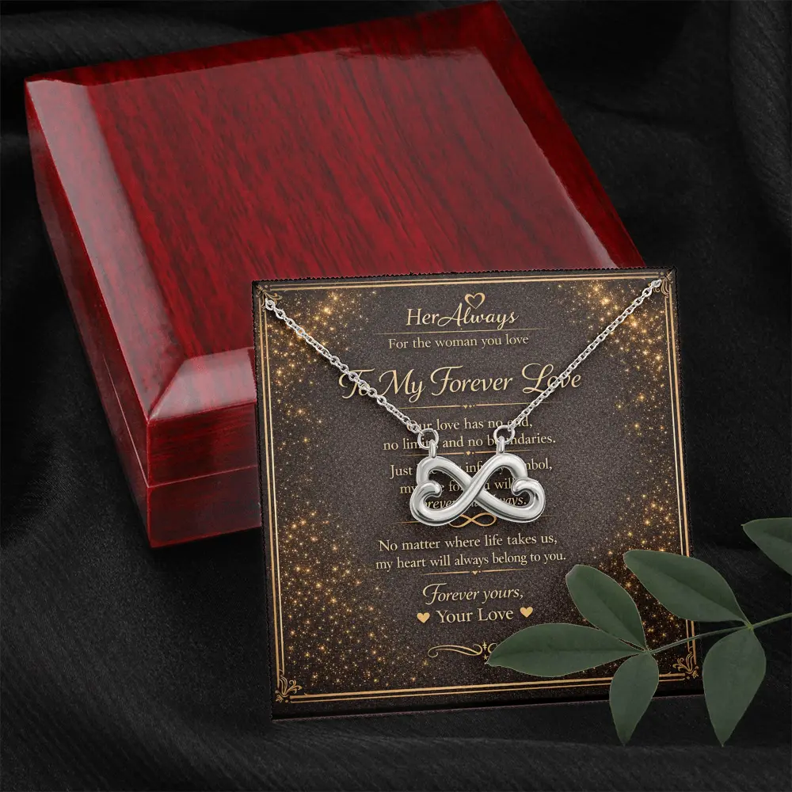
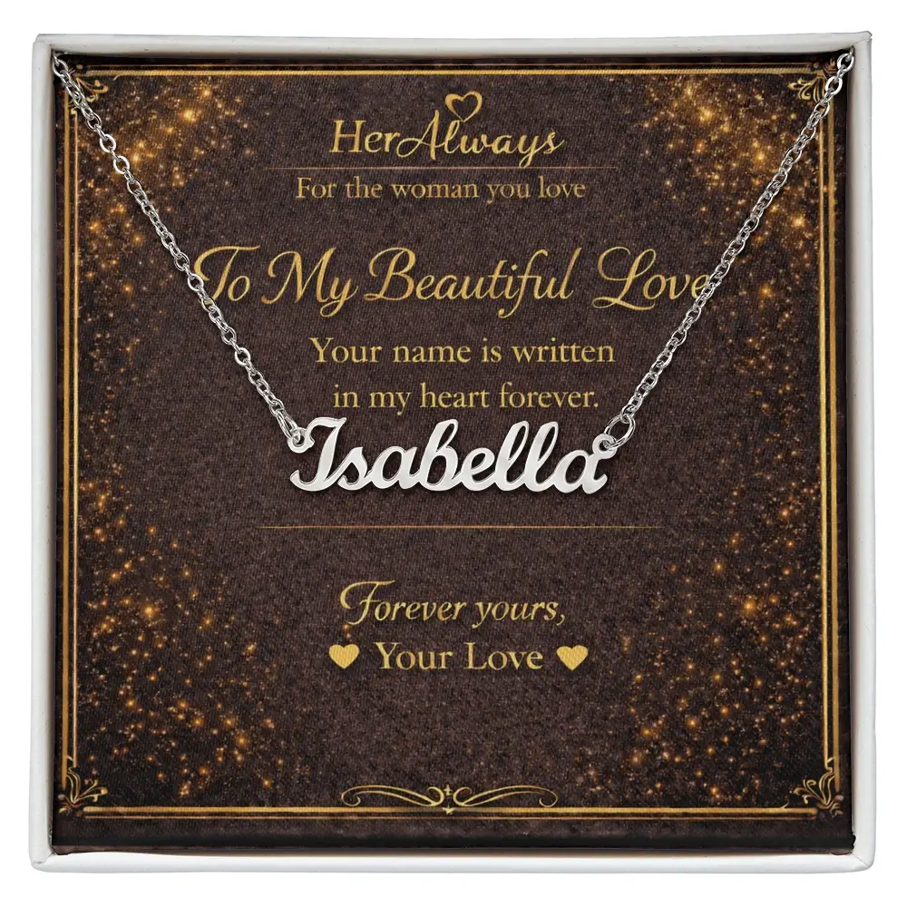

What Is a Message Card Necklace?
A message card necklace is a necklace gift-boxed on a printed card of words written for one person or one moment. It means two things at once: the card says what you feel in words, and the pendant says it in a symbol she can wear every day. Sellers also call it message card jewelry, a sentiment card necklace or a keepsake card necklace.
Ready to choose one? Shop all five message card necklaces from $59.95, each with a personalised message on the card and free worldwide shipping.
In the box | Card vs pendant | Your own words | Who it suits | What to check | FAQ
What Comes in the Box
Every message card necklace has three parts: the necklace, a card carrying the message, and gift packaging. At HerAlways the necklace sits on the printed card inside a mahogany gift box, so the first thing she sees is the words and the pendant together.

Not every product with “message card” in the name is the same. Some are small charm necklaces clipped to a backer card printed with a short saying. Others are gift-boxed pendants with a full card inside. The first is a pretty accessory with a slogan. The second is built to be given, opened and kept, and that is the kind this page is about.
What It Means: The Card and the Pendant
The card carries the specific meaning: who it is for and why you chose it. The pendant carries the symbolic meaning, which stays with her every time she wears it. A good gift lets the two agree. Our guide to 15 necklace symbols and their meanings in love covers every symbol; these are the five we make.
| Pendant | What it says | What the card can add |
|---|---|---|
| Forever Love (heart) | Love and affection, the most widely understood symbol (heart meaning) | One thing about her that you love |
| Infinity Love | Love with no end (infinity meaning) | What you are looking forward to with her |
| Love Knot | Two lives tied together (love knot meaning) | A memory that shows how your lives connect |
| Interlocking Hearts | Two hearts joined as one (interlocking hearts meaning) | The moment you knew you belonged together |
| Custom Name | Made only for her | The story behind her name |
Fixed Card or Your Own Words?
This is the choice that changes what a message card necklace really means. A fixed card is a stranger’s sentence, and it can be lovely but it is not yours. Some sellers only offer ready-made cards, and with others you cannot assume the printed text can be edited, so confirm before you order.
At HerAlways the card is built around your words. Click Create Your Gift, type the message you want, and that is what is printed on the card. If you type nothing, the sample message shown in the product photo prints instead. Either way, check her name and your spelling before you pay, and read our returns page for how personalized items are handled. You can browse every necklace that takes your own message in one place.

Not sure what to write? Our guide to necklace gift messages for your girlfriend has 70+ ideas and a simple formula.
Who a Message Card Necklace Suits
| Moment or person | Why it works | Keep the card |
|---|---|---|
| Anniversary or Valentine’s Day | It marks a date and lasts beyond it | Warm and specific (anniversary necklace for wife) |
| Birthday | It reads as thoughtful, not generic | Short, with one real detail |
| Long distance | She can wear your words when you are not there | About the miles being temporary |
| Early in a relationship | It shows care without a big declaration | Honest and light |
| Someone who struggles to say it aloud | The card does the talking | Plain, in your own voice |
Gold or silver, or for a man? Metal colour has no fixed meaning in a gift, so choose what she already wears. HerAlways necklaces are designed as gifts for the woman you love, so we do not make men’s designs.
What to Check Before You Buy
A card can be moving and still be attached to a poor necklace, so check the details. Ours are described plainly: none is solid gold, and none uses real diamonds.
| Necklace | Price | Material |
|---|---|---|
| Infinity Love | $59.95 | 14k white gold finish over base metal |
| Custom Name | $69.95 | Polished stainless steel, name up to 11 characters |
| Forever Love | $79.95 | 14k white gold finish, lab-created cubic zirconia |
| Interlocking Hearts | $79.95 | Polished surgical steel, cubic zirconia |
| Love Knot | $109.95 | Stainless steel, 14k white gold finish, 6 mm lab-created cubic zirconia |
Delivery is 6 to 15 business days worldwide, so order early for a date. See our shipping page.
When it is not the right gift: if she rarely wears jewelry, a letter or another keepsake may land better. If the card would run ahead of the relationship, choose softer words. See romantic gift ideas for your girlfriend for other options.
Your Words, Her Necklace

If you want one meaningful choice without overthinking it, the Forever Love Necklace and a message in your own words say what the moment is really about.
See the Forever Love NecklaceFAQ: Message Card Necklaces
What is a message card necklace?
A necklace gift-boxed on a printed card of words written for one person or moment. The card says what you mean in words and the pendant says it in symbol, so it is a keepsake and a message in one.
What is the card necklace called?
Message card necklace, message card jewelry, sentiment card necklace and keepsake card necklace all mean the same idea: a necklace sold with a printed card carrying a message.
What do different symbols on necklaces symbolize?
A heart is love and affection, an infinity symbol is love without an end, a love knot is two lives tied together, interlocking hearts are two people joined as one, and a name is something made only for her. See all 15 symbols.
Can I write my own message on the card?
Yes, at HerAlways. Type your words after clicking Create Your Gift and they are printed on the card. If you type nothing, the sample message from the product photo prints instead.
Is there a luckiest pendant to wear?
There is no universal answer, because luck symbols differ by culture and belief. For a love gift, choose the symbol that matches your relationship, not a lucky charm.